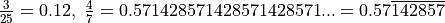
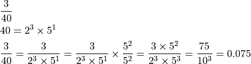
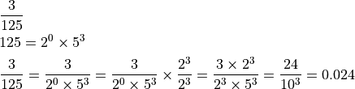
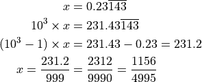

Terminating and Recurring Decimals¶
Any fraction is a rational number. Hence, it will either have a terminating decial representation or a recurring one in the non-terminating case. Examples: . The part that repeats is shown by a horizontal line on the top of that pattern.
Irrational numbers have non-terminating and non-recurring decimal representations. For example, .
Terminating Decimals¶
Any fraction whose denominator has only 2 and 5 in its prime factorization can be written as a terminating decimal. Shown below are examples of why that is the case and how to get the decimal representation.


Recurring Decimal¶
How to convert a non-terminating recurring decimal into a fraction?
Multiply by where  is the number of digits in the repeating pattern and then subtract the original number from this number.
is the number of digits in the repeating pattern and then subtract the original number from this number.
